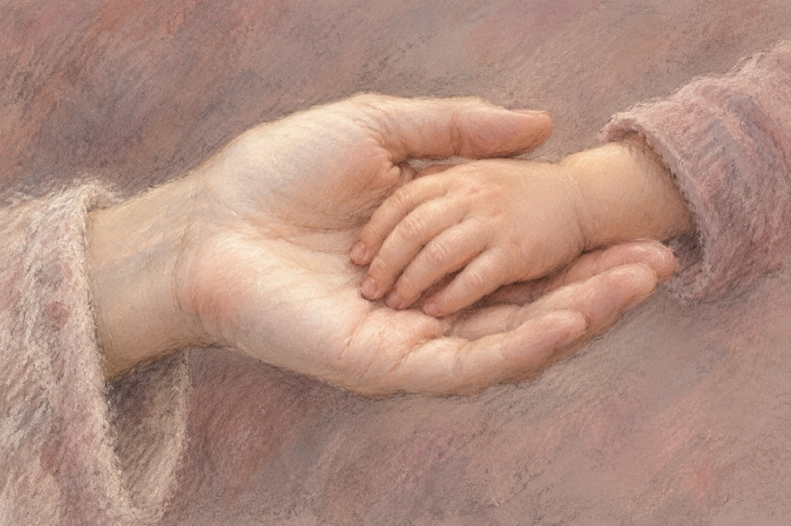

„Zăpada palmei tale”
Atât de albă mi se pare
Palma mamei care m-a născut
Și dragostea de care-a fost în stare
De m-a purtat în brațe și m-a îngrijit!
Ca o zăpadă lină ce s-a așternut
Copilăria mea a fost să fie,
Cum în povești ades s-a pomenit,
Cu cântece, cu veseliii, cu multă bucurie!
”Zăpada palmei tale”
A fost lumina ce mi-ai dat.
O mamă!... De m-am făcut, iată-mă-s mare
Și umblu-n lume-n lung și-n lat!
Și rost la toate tu m-ai învățat
Prin muncă să-mi câștig avutul
Și să nu mint niciodat'
Întotdeauna să-mi respect cuvântul!
”Zăpada palmei tale”, mamă
A fost precum sufletu-ți curat
Și-ai dăruit pământului un om de seamă
Ce numele și viața ta le-a onorat!
Acum în ramă te păstrez
Mă uit la tine zi de zi ca la icoană
Și nopțile întregi eu te visez
Că sunt în preajma ta, iubită MAMĂ!
Vasile Groza